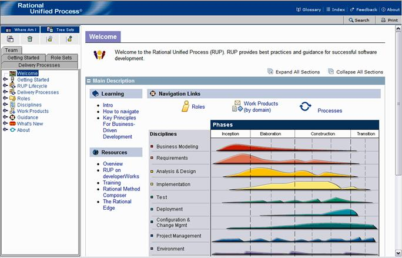

| Navigating the Method Web Site |
 |
|
|
The method Web site consists of a set of HTML pages you can view using Microsoft® Internet Explorer, Mozilla and Firefox browsers. Note: Some capabilities, like the Search and My View, implemented as applets requires JRE 1.4.2 or higher (you can download a JRE from http://java.sun.com/j2se). As an alternative, you can publish a configuration without applets, which does not have the Search and My View capabilities, but does not require a JRE. If the site that you are viewing was published without applets, then Search and My View will not be present. The following figure shows the major elements used to browse the method Web site. Select any area of the figure for a brief explanation of how to navigate.
 Elements of the Browser EnvironmentGlossaryClicking this button will launch a separate window containing the glossary which alphabetically lists the terms used in the method Web site, along with definitions and links to example pages. IndexClicking on the Index button launches a separate window containing an alphabetic listing of topics in the method Web site. Clicking on a hyperlink in the index will cause the related page to be displayed in the main window. FeedbackClicking on the Feedback button launches a separate window with an e-mail message to Rational feedback, automatically referencing the page currently appearing in the main window. AboutClicking on the About button launches a pop-up window with the copyright current version number. Search
Search allows a keyword to be entered and searched for in the process, causing all pages which are relevant to the
topic to be displayed in a Search Results window. The Search Utility works on keyword topics, rather than searching for
strings in process content pages. The Print button sends the content in the main window to your printer. Main Content FrameThis frame is where the method content is displayed. The content is organized in sections that are expandable and collapsible. ViewsA view allows you to navigate and use a method Web site from a different perspective. Here are some examples of views.
Tools to Create Personalized ViewsThese tools allow you to quickly and easily create a personalized view of the method Web site. See the Supporting Material: My View section for information on how to use these tools. |
© Copyright IBM Corp. 1987, 2005 All Rights Reserved © Copyright IBM Corp. 1987, 2006. All Rights Reserved. |